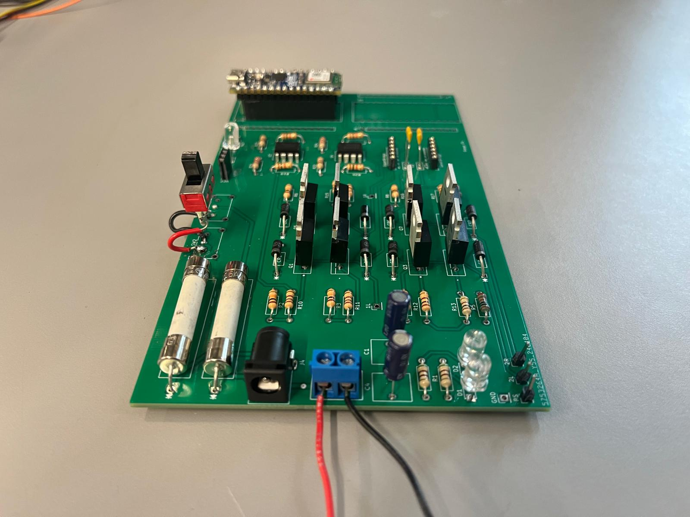
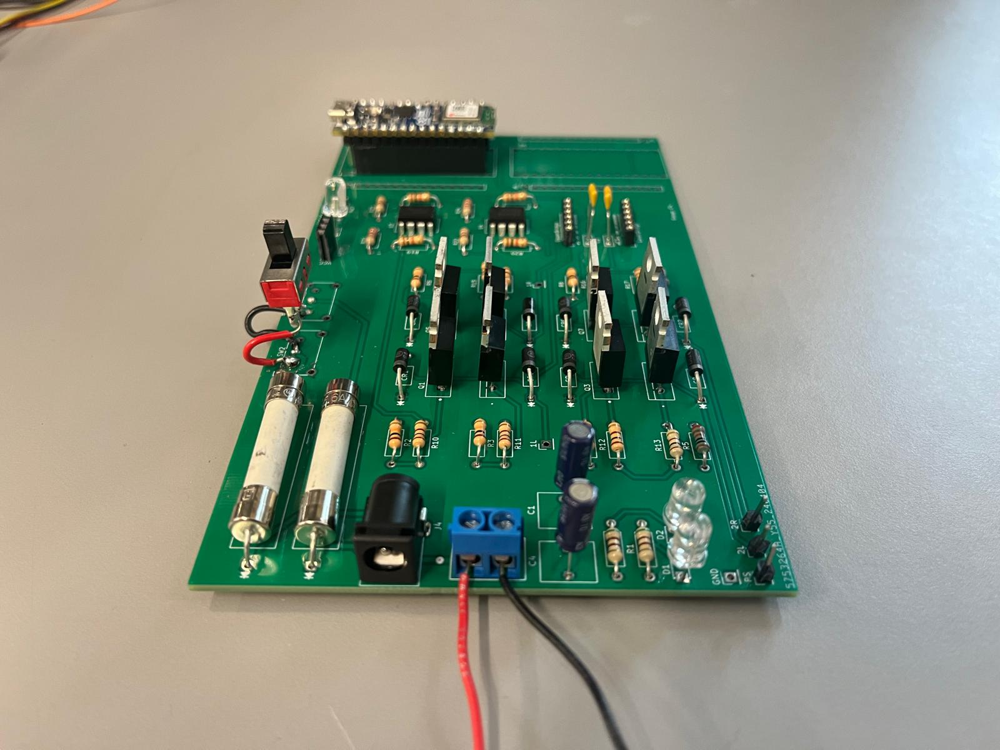

I’m a dedicated electrical engineer with a passion for creating innovative hardware and software solutions. My expertise spans embedded systems, robotics, electronics and PCB design, and FPGA development, where I excel at tackling complex challenges. Explore my projects to see my work in action.
Contact
×
BLE Gamepad Controller
Overview
This project involved creating a BLE-enabled gamepad controller with an ESP32, supported by a SolidWorks model inspired by a PS5 remote. I tested multiple online libraries for hardware compatibility, then implemented a startup joystick calibration routine to compensate for mechanical drift. By connecting the controller to a Windows laptop over BLE, I successfully played a car racing game, showcasing its precision and reliability. Additionally, I designed an embedded C flash logging system with LITTLEFS under real-time constraints for storing calibration data and performance analytics.
Technologies Used
ESP32 (BLE)
Embedded C
PlatformIo
LITTLEFS (Flash Filesystem)
Joystick Calibration & Optimization
SolidWorks
Video Demo
Images
×
Valve Control Actuator
Overview
This project involved developing a high-performance rail system using a stepper motor driver and an Arduino Mega. I optimized microstepping and pulse timing to achieve smooth, fast movement. This system is designed to serve as part of a larger machine responsible for opening and closing a valve on a bucket for pouring asphalt.
Technologies Used
Arduino Mega
Stepper Motor Driver
Power Supply
Testing and Debugging
Video Demo
×
Steering Wheel
Overview
As a firmware developer for UBC Supermileage, I contributed to enhancing the team’s urban vehicle steering system by designing and implementing key PCB and firmware updates. I integrated shift registers, a joystick, and CAN bus connections, establishing reliable hardware communication. Additionally, I developed an RTOS-based CAN fault detection system in C++ that monitored message consistency and provided real-time LCD alerts with a green-to-red status indicator for precise error detection. I also employed the SPI protocol for LCD and SD card communication using an STM32 microcontroller. Throughout the project, I rigorously debugged issues using a multimeter, oscilloscope, and software tests.
Technologies Used
C++
MbedOS (RTOS)
KiCad (PCB Design)
Soldering
Debugging (oscilloscope, multimeter, function generator)
SPI
CAN
Video Demo
Images
×
Laser Animator Robot
Overview
This project involved creating a Laser Animation Robot designed for continuous motor control and precise mirror movements. I developed C code for a PID controller running on an RTOS, optimizing an H-bridge for smooth, accurate motion. Additionally, I built a quadrature encoder decoder in SystemVerilog on the DE1-SoC FPGA to extract position data for precise feedback. I designed a PCB in KiCad, sourced and soldered all components, and implemented a robust power and voltage regulation system—including fuses, capacitors, and switches—to ensure stable operation. Throughout development, I rigorously debugged both hardware and firmware using a multimeter, oscilloscope, and software-based tests.
Technologies Used
C (PID controller, RTOS)
SystemVerilog (Quadrature decoder on DE1-SoC FPGA)
KiCad (PCB Schematic & Layout)
H-bridge Motor Control
Power & Voltage Regulation Components (Fuses, Capacitors, Switches)
This project involved developing a retro-style Tetris arcade game on an FPGA, utilizing a custom VGA core for display output. Once completed, I was able to play Tetris on a VGA monitor by connecting it to my DE1-SoC (FPGA) and giving inputs from my keyboard. I ported a Xilinx-compatible VGA core to work with the DE1-SoC (Altera Cyclone V) using SystemVerilog, enabling smooth VGA signal generation. Additionally, I designed and integrated ROM and RAM modules in Quartus to store fonts and screen content. The game logic was implemented in C, optimizing gameplay for a seamless experience on a VGA monitor.
Technologies Used
SystemVerilog (VGA Core, FPGA Development)
Quartus (ROM & RAM Integration)
Altera Cyclone V (DE1-SoC)
C (Game Logic & Software Functionality)
Video Demo
×
Coin Picking Autonomous Robot
Overview
This project involved creating a self-contained robot that detects and collects coins while staying within a defined boundary. I used an ATmega328P microcontroller programmed in embedded C to control the robot’s movement and coordinate the pick-and-drop mechanism with an electromagnet. A custom metal detector, based on a Colpitts oscillator, identifies coins on the robot’s path, while a perimeter detection circuit featuring a KA358 op-amp signals the robot to reverse if it approaches the boundary. Throughout development, I optimized firmware for efficient motion and tested functionality using a multimeter, oscilloscope, and software-based debugging.


.png)

.png)
.png)
.png)
.png) 
